Caso 021 · Alvar Aalto · 1933 · hospital (sanatorio)
Una ladera tallada en cuatro bancos: cada enfermo tiene la cama junto al vidrio, en el sol que pasa bajo su alero, y delante su terraza sin sombra, porque cada planta se apoya en la cubierta de la anterior; lo pesado queda tallado en la roca y lo ligero, madera y vidrio, mira al sur.
Sintetiza lugar (pinar en ladera que baja al sur, lat. 60,47° N, sol bajo), programa (298 camas que necesitan sol, aire y reposo, más tratamiento, comedor y servicios), composición (cuatro bancos de 8,40 m que se retranquean sobre la cubierta del inferior; nada tapa a nada) y construcción (muros de hormigón cada 4,00 m contra la roca, losa de cubierta de 0,92 m y un marco de madera y vidrio con alero de 2,40 m).
Estereotómico: la roca excavada (desmonte ≈ 17.500 m³, reutilizado en la explanada de la meseta), los muros transversales de hormigón de 0,20 m cada 4,00 m, el muro trasero de 0,30 m, las losas de cubierta de 0,92 m y los núcleos. Tectónico: el marco de madera y vidrio de la fachada sur, el alero de madera de 0,25 m y vuelo de 2,40 m, la tarima de las terrazas y la barandilla de 0,90 m. El plano horizontal es la cubierta de cada banco, que es la terraza del siguiente: sobre él solo asoma la barandilla y, en la meseta, el pabellón de acceso, que se mantiene porque el camino llega por el norte. Retícula: 4,00 m en dirección este-oeste (ejes de muros) y bancos de 8,40 m = alero 2,40 + habitación 6,20 (hasta el eje del pasillo) + pasillo 2,20. Suelo a suelo 3,50 m = 20 tabicas de 0,175.
Latitud 60,47° N: altura solar al mediodía 6,1° (solsticio de invierno), 21,6° (1 de marzo), 29,5° (equinoccios) y 53,0° (solsticio de verano). Habitación de ala (luz horizontal, sólida bajo el alero y difusa del cielo): el alero, con la cara inferior a 3,25 m, solo deja pasar los rayos que cruzan el vidrio por debajo de 1,89 m; a 29,5° la mancha llega a 3,34 m del vidrio en el suelo y a 2,37 m en el plano de la cama (que ocupa de 0,45 a 2,45 m); a 21,6° llega a 5,8 m; a 53° el rayo límite toca el vidrio a 0,07 m del suelo: sombra. Copas de 22 m a 50 m del vidrio: N0 las ve a 18,3°, N1 a 12,3°, N2 a 7,7° y N3 a 4,1°; de noviembre a febrero solo N3 y la cubierta tienen sol directo (N3, 3,2 h el 21 de diciembre; la cubierta, 5 h). Comedor y estar: luz horizontal, difusa y sólida de marzo a octubre. Consultas, rayos X y laboratorio: difusa. Quirófano, esterilización, cocina y salas de espera de núcleo: artificial. Se dibuja en S01 con las líneas de los rayos; maqueta 2 muestra la vista desde el interior de una habitación de N1 (ojos a 1,60 m, mirando al sur, sol del equinoccio): se leen el techo de 2,58 m, el vidrio de 2,50 m, la terraza como plano y el bosque detrás; la herramienta no dibuja mobiliario ni las manchas de sol dentro, que da S01.
Medidas decididas por su efecto: alero 2,40 (deja pasar 29,5° y cierra 53°), cama a 0,45-2,45 m del vidrio, barandilla 0,90, pasillo 2,20 (cama rodante 0,90 + giro). Sistema proporcional: módulo 4,00 m; banco 8,40 = 2 × 4,20; altura 3,50 = 20 × 0,175.
Hormigón y roca (granito del lugar y el desmonte) para lo que pesa y acumula el calor; madera de pino del pinar para el marco, el alero y las terrazas; vidrio al sur con triple hoja (U 1,0). Materiales de la tradición finlandesa (madera, granito) usados por su acuerdo con el clima (Dfb, −20 °C, nieve de noviembre a marzo), no como cita.
Sexos: ala oeste hombres, ala este mujeres. Circulación: pasillo interior de 2,20 m al norte de cada banco, núcleos de extremo (evacuación en cadena) y dos núcleos centrales (escalera protegida, ascensor de camilla y ascensor de servicio).
| Exigido | Propuesto | Cumple / desviación |
|---|---|---|
| Plantas de todos los niveles | P01-P05 más P06 (cubierta) | cumple |
| Secciones longitudinal y transversales | S01 (generadora), S02 (longitudinal), S03 (transversal por el centro) | cumple |
| Alzados | S04 (sur y norte), S05 (oeste y este) | cumple |
| Detalles constructivos | D01 (muro trasero, cubierta-terraza y solera, 1:20) | cumple; la fachada sur (marco y vidrio) se describe en la sección 14 |
| Espacios exteriores | U01, U02, V01, V02 | cumple |
| Alojamiento de enfermos | 298 camas (264 en 8 bancos de ala con 15 habitaciones dobles y 1 accesible de 3 camas por banco + 34 en enfermería grave) | dentro del rango de 225-375 |
| Cuidados y tratamiento | consultas 1-3, rayos X, laboratorio, sala de curas, quirófano con esclusa, esterilización, reanimación (≈ 800 m²) | cumple; corto para 300 camas (ver decisión 17) |
| Zonas comunes | comedor 32,0 × 6,2, estar 16,0 × 6,2 | cumple |
| Cocina y servicios | cocina 16,0 × 8,4, despensa, lavandería, instalaciones y calderas, almacén, taller y garaje, basuras, depósito de cadáveres | cumple |
| Administración y dirección | despachos en N2, administración en PL | cumple |
| Alojamiento del personal | 12 habitaciones (24 plazas), una accesible | cumple; el resto vive en la población vecina |
| Acceso, recepción, visitas | pabellón de acceso en PL, sala de visitas, plazas accesibles, parada de ambulancia | cumple |
| Superficie construida 9.000-15.000 m² | ≈ 11.450 m² (útil interior 10.235 m²) | cumple (≈ 38 m² por cama; tipología 35-50) |
| Altura, retranqueos, ocupación (urbanística) | no consta | sin parámetro |
| Evacuación (incendios) | no consta; se aplican los mínimos: recorrido ≤ 50 m (N1: 48,6 m) | cumple |
| Accesibilidad | no consta; ascensor de camilla en cada núcleo, itinerario accesible, 8 habitaciones y 2 plazas accesibles | cumple |
| Energía U muro / cubierta y suelo / ventana: 0,17 / 0,09 / 1,0 | muro 0,17 (aislante de 0,20); cubierta 0,08 (aislante de 0,45); suelo 0,09 (aislante de 0,35); vidrio triple 1,0 | cumple (cálculo aproximado con λ = 0,035 W/mK) |
| Nieve 2,5 kN/m² | losa de hormigón de 0,30 m con luz de 4,00 m entre muros: peso propio y capas ≈ 9 kN/m², nieve 2,5, uso de terraza 4,0 (≈ 15,5 kN/m² en total, momento ≈ 31 kNm/m) | cumple (predimensionado: relación luz/canto 13) |
Ninguna.
Muros de hormigón armado transversales de 0,20 m cada 4,00 m y muro trasero de 0,30 m sobre la roca. La losa de cubierta-terraza (hormigón de 0,30 m más 0,45 de aislante y 0,17 de terminación, 0,92 m en total) trabaja en una dirección entre los muros transversales: luz de 4,00 m, canto de 0,30 m (relación luz/canto 13), cargas ≈ 15,5 kN/m² (peso propio y capas 9, nieve 2,5, uso de terraza 4,0). El marco de madera laminada del frente sur y el alero de 0,25 m (vuelo 2,40 m) son ligeros y se apoyan en la losa. Cimentación: muros y suelos apoyan en la roca, sin zapatas profundas. Juntas de dilatación cada 40 m en las alas: no dibujadas en esta fase, se definen en el proyecto de ejecución.
| Elemento | Material | Acabado |
|---|---|---|
| Muro trasero y transversales | hormigón armado | visto, encofrado de tabla |
| Tabiques interiores | bloque | enlucido |
| Frente sur (marcos de 0,12 m) | madera | aceite natural; vidrio triple |
| Alero y terrazas | madera | pino tratado |
| Forjados y losas | hormigón | solera pulida / tarima en habitaciones |
| Núcleos | hormigón | visto |
| Cubierta del pabellón y servicios | hormigón | grava |
Calefacción desde la sala de instalaciones y calderas (PL), con distribución horizontal por el pasillo de 2,20 m de cada banco, bajo la losa de 0,92 m (libre 2,58 m, ya contado); baños apilados con patinillos de 0,34 × 0,30 m; dos núcleos centrales con dos ascensores cada uno (camilla y servicio), cuatro en total, apilados desde N0 hasta PL; cuartos de limpieza en cada núcleo y planta. Las aguas de las terrazas se vierten por pendiente del 1,5 % hacia el borde de cada banco; el trazado se desarrolla en el proyecto de ejecución.
Dfb: masa que acumula (roca y hormigón al norte y abajo, 0,45 m de aislante), sur vidriado con alero que cierra el sol alto de verano (53°) y deja pasar el bajo (29,5°). La nieve se acumula en las terrazas: de noviembre a febrero la cura es dentro del cuarto, junto al vidrio.
Capas del muro trasero, de la roca al interior: relleno drenante de grava 0,30, impermeabilización 0,02, aislante 0,20, hormigón 0,30, trasdosado de yeso 0,05. Cubierta-terraza, de arriba abajo: tarima de pino 0,04, rastreles y cámara ventilada 0,08, impermeabilización 0,01, mortero de pendiente 0,04, aislante 0,45, losa de hormigón 0,30. Solera: tarima 0,03, mortero 0,05, losa 0,30, aislante 0,35, roca. El encuentro del frente sur: marco de madera de 0,12 m con vidrio triple, apoyado en la losa de 0,30 con alero de madera de 0,25 m que vuela 2,40 m separado de la losa de 0,92.
Itinerario accesible: aparcamiento (2 plazas de 3,60 con banda de transferencia de 1,20 m) → pabellón de acceso → ascensores → plantas. El alojamiento del personal, aislado en la meseta, se alcanza por un itinerario accesible de firme duro y pendiente 0 % (la meseta es llana) que une la plaza de acceso con el camino del personal (estancia exterior «Itinerario accesible», 3,0 m de ancho). Habitaciones accesibles de 8,0 × 6,2 m, 8 en total, con baño de círculo de 1,50 m. Evacuación interior protegida (no hay escaleras exteriores): N0 y PL salen directamente al exterior; N1-N3 por los núcleos de extremo (escalera en cadena) y los centrales; recorrido máximo medido N1 48,6 m, N2 44,6 m, N3 43,1 m. Alturas libres sobre peldaños ≥ 2,29 m.
Lo que comparte con la obra original porque lo impone el encargo: el pinar, la orientación sur, la escala de unos 300 enfermos, la separación de funciones y la crujía única de habitaciones al sur con el pasillo al lado opuesto (impuesta por el sol y la cama junto al vidrio, no copiada). En qué se aparta: la original apila una barra con balcones que se dan sombra y se articula en planta; aquí se talla la ladera en cuatro bancos que se retranquean y nada tapa a nada; el frente es de madera y vidrio con alero calculado por la altura solar; la masa de la roca se lee en la sección. Desde la teoría: la idea nace de la síntesis de ladera, sol bajo y 298 camas, contrapone masa y ligereza y mide la luz con la geometría solar real.
El soleamiento calculado (secciones con los rayos) y las vistas maqueta 1 y maqueta 2 sustituyen a las maquetas reales al sol. El desnivel de la ladera (1:2,4), el claro de 50 m y la altura de los pinos (22 m) son datos supuestos: si el desnivel fuera menor, bajaría el desmonte y la propuesta se haría con tres bancos o algo de relleno; la sección y el sol sobreviven. Las secciones largas y los alzados de 200 m ocupan poco de la hoja (AVISO de ocupación): es la proporción del edificio.
Las láminas S02, S03, S05, P06, U01, U02 y D01 salen con ocupación inferior al 60 %: el edificio mide 200 m de ancho por unos 45 m de fondo y 17,5 m de alto, y a una escala legible (1:200-1:350) llena el ancho de la hoja, no el alto; reducir los márgenes obligaría a bajar de escala y a perder la lectura de las cotas. Se acepta. El alzado S04 se dibuja sin el pinar (que mide 22 m y taparía la fachada) para que se lea el frente de madera y vidrio de los cuatro bancos; el pinar se ve en U02, V01 y V02. Los dos paños de cubierta de la meseta son distintos: el del pabellón de acceso y los servicios (hormigón, +17,50) y el del alojamiento del personal (madera, +17,30), por ser un edificio ligero aparte. Los rótulos de más de 60 números sobre P01 son las 30 habitaciones numeradas (recuento del programa).
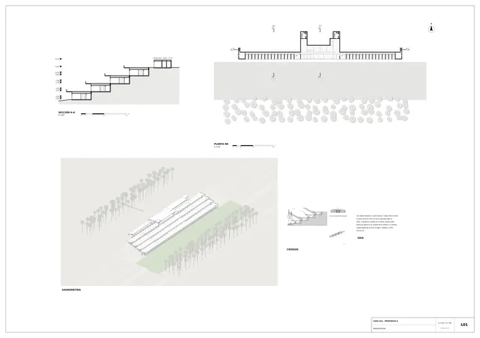
Presentación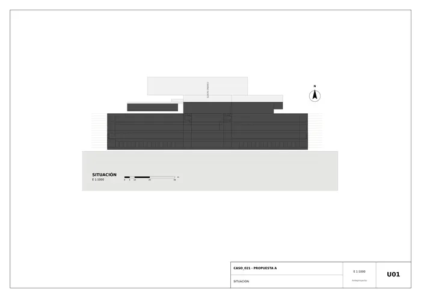
U01 · Situación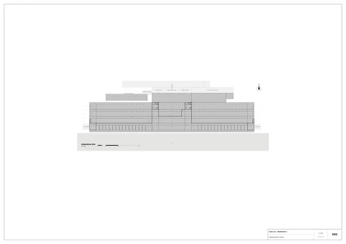
U02 · Urbanización y paisaje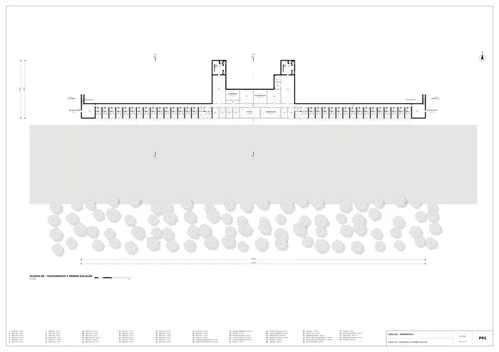
P01 · Planta n0 · tratamiento y primer escalón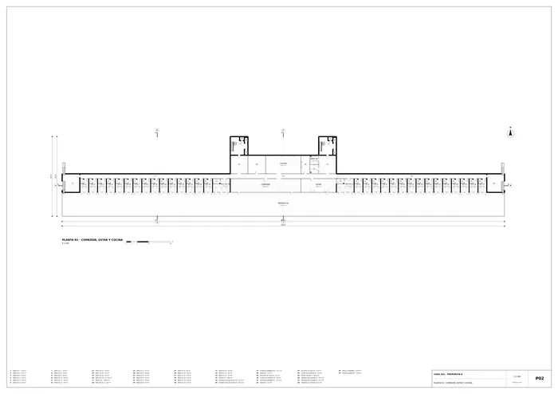
P02 · Planta n1 · comedor, estar y cocina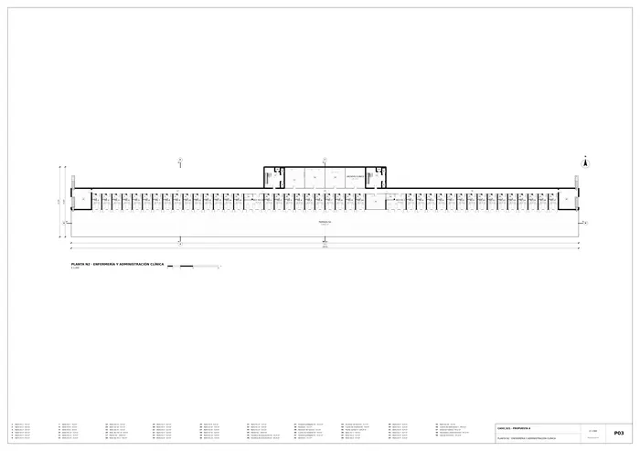
P03 · Planta n2 · enfermería y administración clínica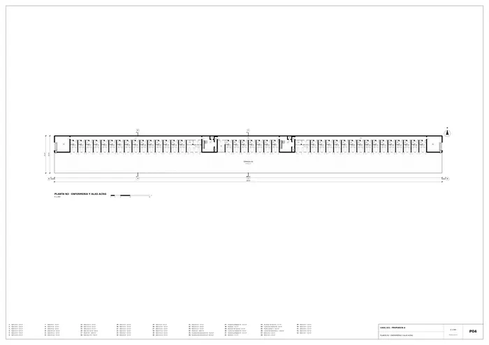
P04 · Planta n3 · enfermería y alas altas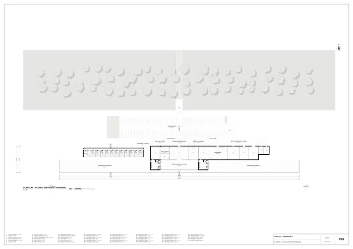
P05 · Planta pl · acceso, servicios y personal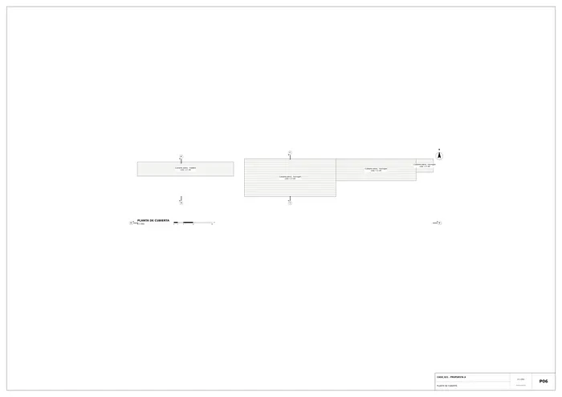
P06 · Planta de cubierta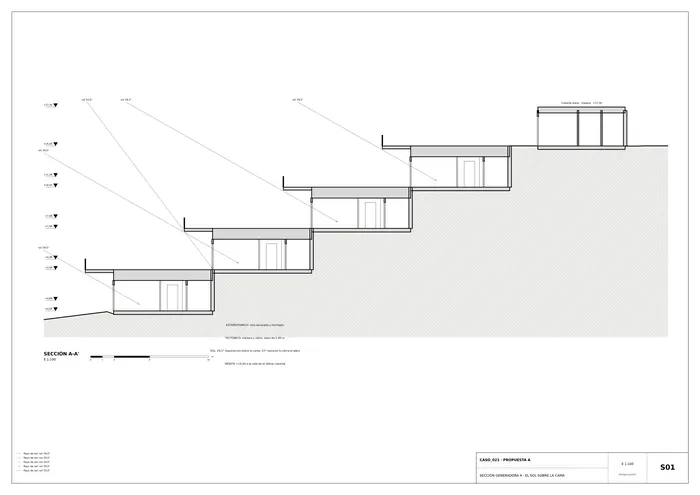
S01 · Sección generadora a · el sol sobre la cama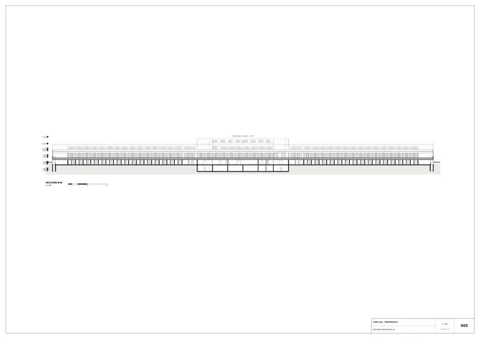
S02 · Sección longitudinal B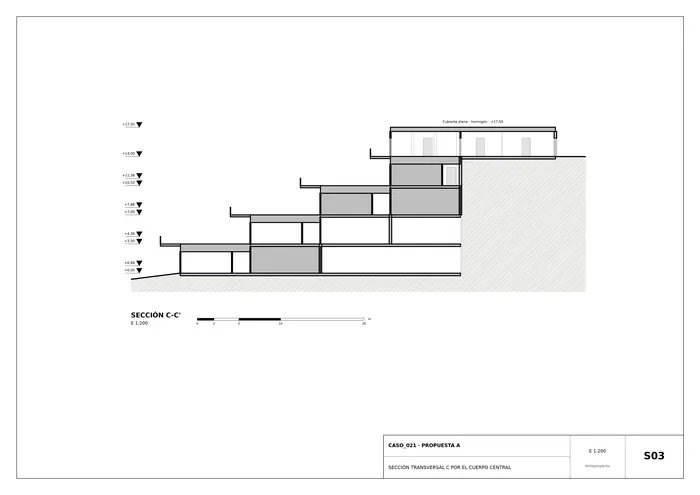
S03 · Sección transversal C por el cuerpo central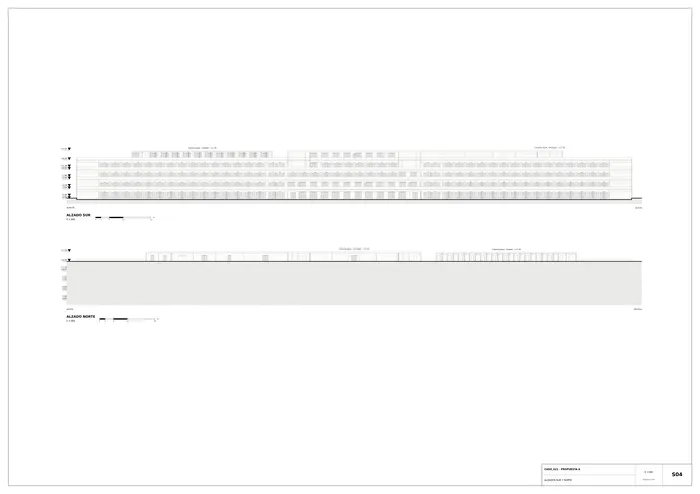
S04 · Alzados sur y norte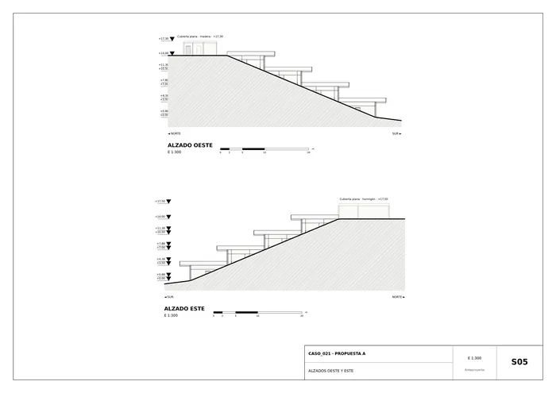
S05 · Alzados oeste y este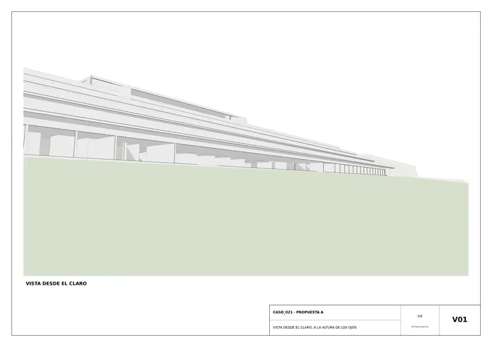
V01 · Vista desde el claro, a la altura de los ojos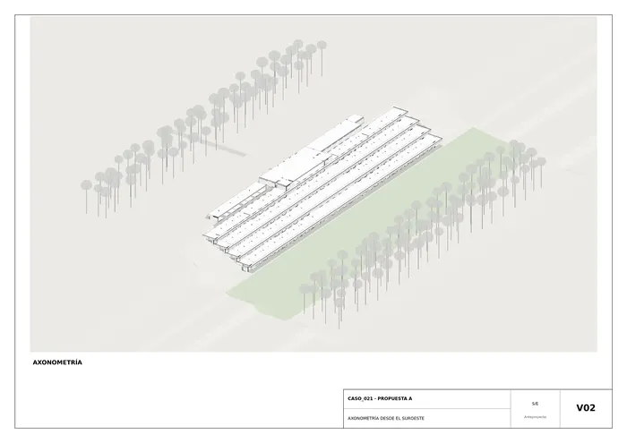
V02 · Axonometría desde el suroeste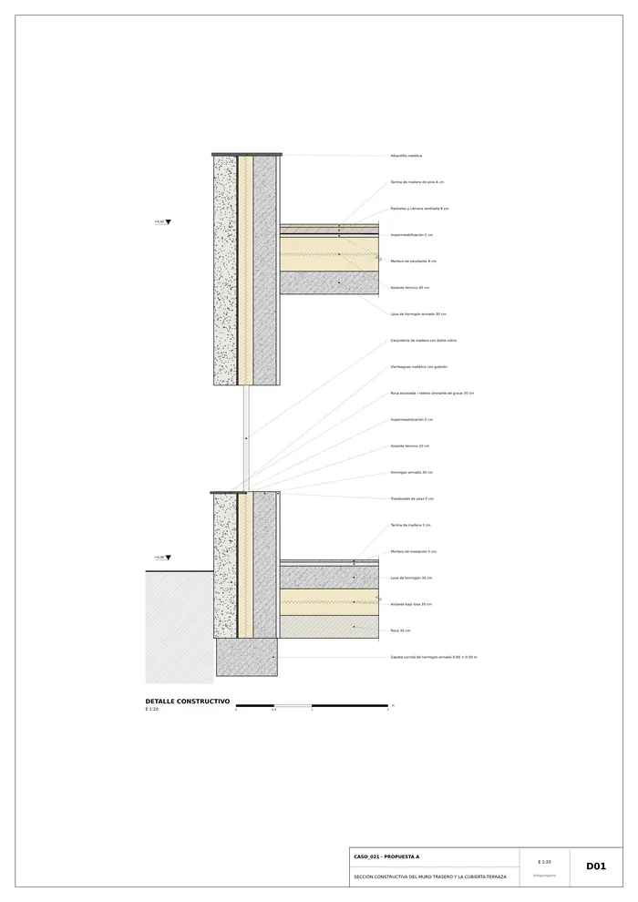
D01 · Sección constructiva del muro trasero y la cubierta-terrazaMemoria de la propuesta tal como la entregó el sistema. Se han omitido las notas internas del proceso (revisiones, control de reconocimiento y referencias a archivos de trabajo).